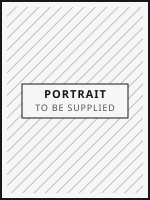

Bennett Mende
Industrial Engineering student at TU Berlin, exchange at UC Berkeley. Working Student in Data Analytics & AI in Procurement at Siemens Energy. Before that: shop floor at ABB, audit at EY, two years of student consulting.

GN
General notes
Zone B
- Bennett studies Industrial Engineering (B.Sc.) at Technische Universität Berlin, 2023 to 2027, with a focus on mechanical engineering.
- He works where engineering meets business: assembly documentation and AutoCAD at ABB, statutory and consolidated audits at EY, a risk-management project lead in student consulting, and now data analytics and AI in procurement at Siemens Energy.
- He spent the fall 2025 semester at UC Berkeley in Industrial Engineering & Operations Research on a full tuition scholarship.
- He holds the Deutschlandstipendium 2025/2026 and an e-fellows.net online scholarship, each awarded for outstanding academic performance.
- He works in German and English, and reads French at B2. Based in Berlin.
- All data on this sheet is taken from his LinkedIn profile as of 6 September 2026.
EQ
Experience
Equipment list · Zones B to D
| Tag | Period | Service | Notes |
|---|---|---|---|
| T-601Siemens Energy | |||
| – today | Working Student in Data Analytics & AI in Procurement | Current role. Data analytics and AI applied to procurement. | |
| F-501EY | |||
| – | Intern in Auditing | Participated in the audits of statutory and consolidated financial statements for companies of various industries, legal forms, and sizes. | |
| P-301ABB | |||
| – | Working Student in Industrial Engineering | Developed standardized assembly instructions by consolidating previous assembly documentation. AutoCAD | |
| – | Basic internship in Mechanical Engineering | Foundational internship on the shop floor. | |
| – | Working Student in Industrial Engineering | First working-student position at ABB. | |
| M-201Company Consulting Team e. V. | |||
| – | Student Consultant | Project lead, MP Risk Management: led a team developing a risk management system for the CCT, covering risk identification and the steps that follow it. ISO 31000 Expert interviews | |
| – | Head of Social Media | Led a team creating social media content for the CCT across Instagram and LinkedIn. Microsoft Excel Targeted marketing | |
| – | Deputy Head of External Communications | Led interviews to recruit new members for the CCT. | |
UT
Education
Utilities and feed · Zone E
- V-101Technische Universität Berlin
- Bachelor of Science, Industrial Engineering
- –
- Focus on mechanical engineering. Programming basics in C and C++, LaTeX, Fusion (CAD).
- E-401University of California, Berkeley
- Industrial Engineering & Operations Research (IEOR), exchange semester
- –
- Full tuition scholarship. Coursework in entrepreneurship and start-ups.
Certificates
- TOEFL iBT111 / 120
- DELF B2Diplôme d'Etudes en Langue Française
IX
Skills
Instrument index · Zone E
Each tag on the diagram decodes here, with the unit where it was acquired.
- AutoCADABB
- Fusion (CAD)TU Berlin
- LaTeXTU Berlin
- C and C++, basicsTU Berlin
- ISO 31000 risk managementCompany Consulting Team
- Expert interviewsCompany Consulting Team
- Microsoft ExcelCompany Consulting Team
- Targeted marketingCompany Consulting Team
- EntrepreneurshipUC Berkeley
- Start-upsUC Berkeley
Languages
- GermanNative
- EnglishFull professional · TOEFL iBT 111/120
- FrenchB2 · DELF
RV
Milestones
Revision table · Zone F
| Rev | Date | Description |
|---|---|---|
| 0 | Enrolled in B.Sc. Industrial Engineering, Technische Universität Berlin. | |
| 1 | Joined Company Consulting Team e. V. as Student Consultant. | |
| 2 | TOEFL iBT, 111 of 120. Took on Head of Social Media and Deputy Head of External Communications at the CCT. | |
| 3 | Started at ABB as Working Student in Industrial Engineering. | |
| 4 | Exchange semester at UC Berkeley, IEOR, on a full tuition scholarship. | |
| 5 | Deutschlandstipendium, funding year 2025/2026. | |
| 6 | Audit internship at EY, Berlin. | |
| 7 | Online scholarship from e-fellows.net, awarded for outstanding academic performance. | |
| 8 | Started at Siemens Energy as Working Student in Data Analytics & AI in Procurement. |
marks an award or scholarship.